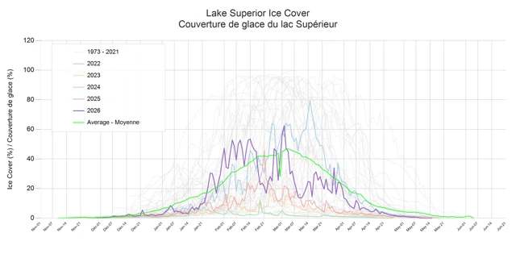

Python / Ice coverage charts
Great Lakes overlays — all six regions
Generate English, French, and bilingual charts for Erie, Huron, Michigan, Ontario, Superior, and the combined basin: eighteen PNGs in one run.
Example plot

Run the program
Extract the full ZIP before running. Keep its folder structure and the included CSV files together.
python -m pip install -r requirements.txt
python generate_all_lake_charts.pyThe included CSV folders match the script’s relative paths. Charts are written beside each regional CSV, and all figures are displayed after generation.
The --check option checks that the six CSV paths exist without generating charts. Requires pandas, NumPy, Matplotlib, and seaborn. The original program is preserved.
Rerunning replaces output images with matching filenames. Update the CSV copies when new data is available. The webpages document local programs; the programs do not run in your browser.